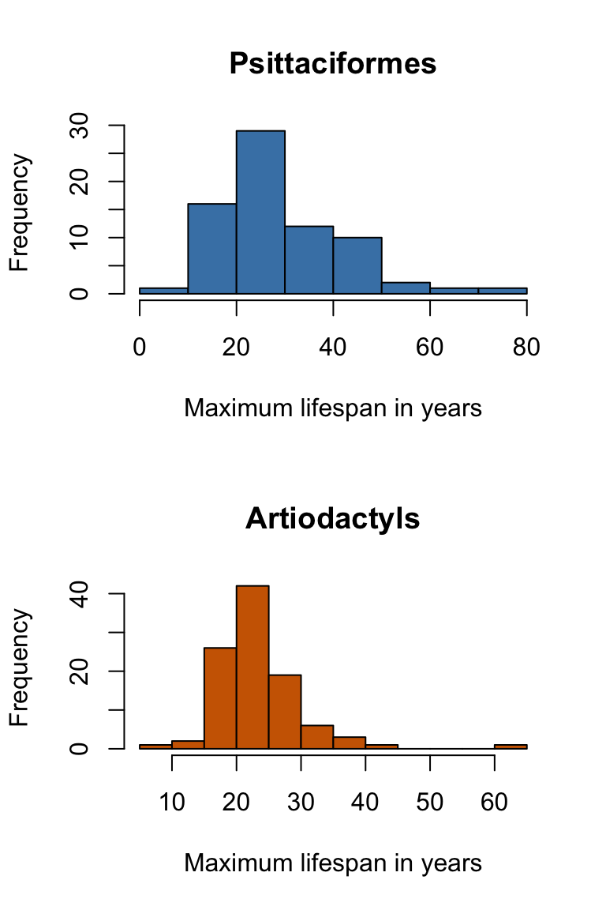

What is a frequency histogram?
A frequency histogram is a way of displaying the data in a single variable which shows you many of the important features of the dataset: it shows where the centre of the data (the central tendency) is located, it shows how much spread or dispersion there is in the data and, importantly, it shows the shape of the dataset, giving you an indication of what the frequency distribution of the data might be. It also allows you to check your data for problems such as problem data points that might be the result of errors and which might show up as having much, much larger or smaller values than the rest, or which might have impossible values such as a negative count when only positive ones are possible.
Before you start this tutorial, you’re recommended to watch this video which explains some of the basics.
The simplest frequency histograms are those where the data are organised on an ordinal scale: one with discrete values that have a natural order to them. One example might be data which are collected in a survey and which are scored on a Likert Scale — this is a scale where a respondent is asked to express how much the agree or disagree with a particular statement, usually on a five or seven point scale. If you’ve spent more than 30 seconds as a student you’ve most likely been asked to fill one or more of these in. Here are some data from a fictional survey of attitudes towards conservation:
Statement 1: Conservation work can only succeed if it brings benefits to the people living in the area to be conserved
| Response | Strongly disagree | Disagree | Neutral | Agree | Strongly Agree |
|---|---|---|---|---|---|
| Number of responses | 12 | 20 | 29 | 61 | 41 |
Statement 2: Conservation can only succeed in the long term if it generates profits for business
| Response | Strongly disagree | Disagree | Neutral | Agree | Strongly Agree |
|---|---|---|---|---|---|
| Number of responses | 44 | 27 | 15 | 53 | 24 |
You can look at those data and you can see some patterns without much thought, but it’s easier to see if we plot the data as histograms.
Figure 1 Frequency histograms for responses to two statements about conservation
For statement 1, the most common response is “Agree” and the histogram shows a fairly sharp peak, with relatively few people disagreeing with the statement. For statement 2, however, even though the most common response is the same as statement 1 (“Agree”), the shape of the dataset is different, with a substantial second peak corresponding to “Strongly disagree” and relatively few neutral responses — we call this a bimodal distribution. While the first statement seems to be something that most people tend to agree on, it looks like the second one is something that people are divided on, with strong opinions both for and against this idea. By plotting the whole dataset as a frequency histogram we have quickly visualised the important patterns in the data and reach a richer understanding than we might have done if we just looked at summary statistics such as the most common response.
Frequency histograms for continuous data
A lot of the time we are dealing with data that doesn’t fit itself nicely into a small number of convenient categories, of course. You might have measurements of size, weight, or time, you might have counts of cells, immunogold staining densities, expression data from a transcriptomics study or estimates of viral load from qPCR — the kinds of data that biologists deal with are endless. Here’s one example from a paper published in 2014 which examined how ecology is related to maximum lifespan in 1368 species of birds and mammals1. I’ve extracted the data for just the mammalian order Artiodactyla (the even-toed ungulates) for which there are 101 different species with known maximum life spans, and this data frame is loaded as longevity. Here are the first twenty of these in years:
| Species | Common name | Maximum lifespan (years) |
|---|---|---|
| Elaphodus cephalophus | Tufted deer | 22.7 |
| Eudorcas thomsonii | Thomson’s gazelle | 20.0 |
| Gazella dorcas | Dorcas gazelle | 23.7 |
| Gazella gazella | Mountain gazelle | 18.3 |
| Gazella leptoceros | Rhim gazelle | 14.6 |
| Gazella subgutturosa | Goitered gazelle | 16.3 |
| Giraffa camelopardalis | Giraffe | 39.5 |
| Addax nasomaculatus | Addax | 28.0 |
| Aepyceros melampus | Impala | 25.6 |
| Alcelaphus buselaphus | Hartebeest | 22.5 |
Our data on maximum lifespan don’t fall into easy classes like our earlier example with survey data — there are 77 unique values in our 101 species longevities, so simply counting the number of datapoints with each value would not be useful. What we do with data like this is to divide it into a series of “bins” each of which has a range of values, and then count the number of data points that fall into each bin. If we do this for our data from the artiodactyls we get this:
| Bin | Count |
|---|---|
| 0-5 | 0 |
| 5.1-10 | 1 |
| 10.1-15 | 2 |
| 15.1-20 | 26 |
| 20.1-25 | 42 |
| 25.1-30 | 19 |
| 30.1-35 | 6 |
| 35.1-40 | 3 |
| 40.1-45 | 1 |
| 45.1-50 | 0 |
| 50.1-55 | 0 |
| 55.1-60 | 0 |
| 60.1-65 | 1 |
You can see, for example, that there are two species with maximum lifespans between 5.1 and 10 years, 19 with maximum lifespans between 20.1 and 25 years and none with maximum lifespans between 50.1 and 55 years. Using R we don’t have to generate a table like this or count numbers because the hist() function will do this for us, so it’s very easy to make a histogram. First we have to load the data. Note that we’re using subset() to generate a new data frame with only the artiodactyl data from the big longevity data frame.
#Make order a factor
longevity$order <- as.factor(longevity$order)
#Subset out the artiodactyls
artiodactyls <- subset(
longevity,
order == "Artiodactyla") Now we can generate our frequency histogram.
#Generate the histogram
hist(artiodactyls$maximum_lifespan_yr,
#Nice label for the x-axis
xlab = "Maximum lifespan in years",
main = "Artiodactyls", #Graph title
col = "darkorange3" #Tasteful colour
)
Figure 2 Frequency histogram of maximum lifespans for 101 species of artiodactyl
This gives a very nice visualisation of the shape of the dataset and we can get lots of information from looking at this. Firstly, we can see that these data have a central tendency — the data are clustered around a maximum lifespan of between 20 and 25 years. Secondly, there is not a lot of dispersion in these data: the great majority of the values fall between 15 and 30. Thirdly, the shape of the histogram is not quite symmetrical. There is something of a tail extending towards the upper values, indicating that the frequency distribution of these data shows some degree of positive skew. This means that while most of the values are close to the centre of the distribution, there are some rather larger values than we would expect from data that conformed to something like a normal distribution — more on this in a bit. Finally, there is one value that seems rather unexpectedly high even given the positive skew in the data. When you see a data point like this you need to ask whether it’s just an extreme value or whether it might be an error: a species that’s been misclassified into the wrong order, for example, or a mistake in recording the data. Let’s find out which species that large value represents.
artiodactyls$species[which(
artiodactyls$maximum_lifespan_yr > 60)]## [1] "Hippopotamus_amphibius"Aha, it’s the hippopotamus. This makes sense because hippos are quite unique animals, being in their own family within the artiodactyls, and are very different from other artiodactyls in lots of other ways, including being very much bigger than other animals in the order, with an average weight of between one and one and a half metric tonnes and occasionally reaching more than four tonnes. Rather heavier than the average gazelle.
- Healy, K., et al. (2014) Ecology and mode-of-life explain lifespan variation in birds and mammals. Proceedings. Biological sciences, 281, 20140298
Exercise: draw your own frequency histogram
You’ve seen that R makes it easy to generate frequency histograms with the hist() function. See if you can draw a frequency histogram like the one for artiodactyls but this time for a completely different order of animals, the Psittaciformes, otherwise known as the parrots. The longevity dataset has data on maximum life span for 72 species of parrot, and we can generate a new data frame just for these birds using subset(), just like we did with the artiodactyls. Psittaciformes is a bit much to type so we’ll just call this one “parrots”.
#Make order a factor
longevity$order <- as.factor(longevity$order)
parrots <- subset(
longevity,
order == "Psittaciformes")Now try to draw a frequency histogram. You can use the code we used above but you’ll need to modify it by changing the variable to be drawn and the main title. If you want you can try changing the colour — try steelblue, grey20 or if you’re feeling adventurous hotpink.
#Remember that you need to specify the parrots
#dataframe and give the name of the maximum_lifespan_years variable
#with the two separated by a dollar symbol#Use the main = argument to specify the title.
#The text for the title needs to be in quote marks.
#The col = "darkorange3" can be pasted in as is or you can change the
#colour name as suggested above#Check that there's a comma between all arguments
#and that all your brackets and quote marks are
#matched.#This is the solution:
hist(parrots$maximum_lifespan_yr, #Generate the histogram
xlab = "Maximum lifespan in years", #Nice label for the x-axis
main = "Psittaciformes", #Graph title
col = "hotpink" #Seriously tasteful colour
)Now that you’ve drawn your histogram, have a think about what it’s showing you and try to answer these questions.
Here are the histograms for parrots and artiodactyls together.

Refining the histogram
One thing you might have noticed is that hist() drew the two histograms slightly differently: whereas the artiodactyl one used five-year bins, so the number of data points between 5.1 and 10 or 10.1 and 15 years were counted, the parrots one used ten-year bins, so the numbers between 0 and 10 or 10.1 and 20 were counted. hist() selects a bin size on the basis of what will make a nice looking histogram, but sometimes we want to change this. In this case, if we want to compare our two histograms we might want to draw them with the same bin size. We can do this by using the breaks = argument, which will take a vector of the maximum value for each bin. If we wanted 20 year bins, for example, we could use the argument breaks = c(20,40,60,80,100) as part of our hist() function call.
See if you can redraw your histogram, but this time using 5-year bins, with a maximum of 80 and a minimum of zero.
#You just need to use the code from before but add
#an extra argument specifying the breaks.#You don't need a zero in your vector of breaks,
#it can start at 5#Check that there's a comma between all arguments
#and that all your brackets and quote marks are
#matched.#This is what you need to add:
#breaks = c(5,10,15,20,25,30,35,40,45,50,55,60,65,70,75,80)
#with commmas in the right places, so before and after unless
#it's the last argument#This is the solution:
#Generate the histogram
hist(parrots$maximum_lifespan_yr,
#Nice label for the x-axis
xlab = "Maximum lifespan in years",
main = "Psittaciformes", #Graph title
col = "steelblue", #More restrained colour
breaks = c(5,10,15,20,25,30,35,40,45,
50,55,60,65,70,75,80)
)That’s interesting, and gives a rather different pattern to the one with the wider bins that we looked at before. There seems to be rather more structure to the dataset than was visible previously, and in particular there seem to be two peaks: one at around 25 to 30 years and a second, lower one at around 40 to 50 years. When we see a bimodal dataset like this it often indicates that there is some underlying structure in the data, with some group or groups that are somewhat different from the rest. In this case the obvious place to look is in the taxonomic structure of the order: the parrots are a diverse group of birds and it might be that the second peak we see in the histogram is associated with variablity within the order. Here’s a “stacked histogram” with the three big families of the Psittaciformes shown in different colours. I’m importing an edited version of the parrots data with the families added here, and I’m using a function called histStack() from the plotrix package to draw this graph.
library(plotrix)
parrots2$family <-
factor(parrots2$family,
levels = c("Psittacidae",
"Psittaculidae",
"Cacatuidae"))
histStack(
maximum_lifespan_yr ~ family,
data = parrots2,
breaks = 16,
xlab = "Maximum lifespan (years)",
col = c("plum4",
"aquamarine4",
"darkorange"),
xlim = c(0, 80)
)
legend("topright",
legend = c("Psittacidae",
"Psittaculidae",
"Cacatuidae"),
fill = c("plum4",
"aquamarine4",
"darkorange")
)Figure 3 Stacked histogram of maximum ages for the parrots showing the three main families
The Psittaculidae is a group that includes many of the smaller parrots such as budgerigars, lorikeets and parakeets and these are mostly short lived, with no examples here with a maximum lifespan greater than 35 years. The Cacatuidae are better known as the cockatoos, and these are all remarkably long-lived, with no example here with a maximum lifespan of less than 25 years. The Psittacidae are the classic parrots such as African Grey parrots and Macaws, and these have intermediate maximum life expectancies, with some species being quite short lived, whereas some such as the African Grey parrots are contributing to the second peak at 40-50 years. Overall then, by looking at a carefully chosen frequency histogram we’ve exposed some of the underlying structure in this set of data: not everything we can see is explained by differences between families, but certainly we now know that the lower peak is associated with the Psittaculidae and the upper one with Cacatuidae. This will inform any further analysis we do on these data: it is tremendously important to be aware of whether your data has structure like this. As an example, if the Cacatuidae are generally heavy birds and the Psittaculidae are generally light (which is indeed the case) then we might see a positive relationship between weight and maximum lifespan in the parrots. Drawing any kind of conclusion about this would be very difficult however, because we wouldn’t know whether this represented a causal relationship or whether the reason than the Cacatuidae live longer than the Psittaculidae is unrelated to their weight but determined by some other aspect of their biology which they share because they are closely related — a statistician would say that there is a confounding variable here which would be relatedness.
To put this slightly more formally, one of the fundamental things we assume when doing statistical analysis is that our datapoints are independent - in other words each one is a separate measure of the phenomenon of interest and that no pair of data points are likely to be more similar than we would expect by chance. Here, quite clearly, one cockatoo is more likely to be similar to another cockatoo than it is to a lorikeet, and we would need to take this into account in our analysis.

This work is licensed under a Creative Commons Attribution-NonCommercial 4.0 International License.